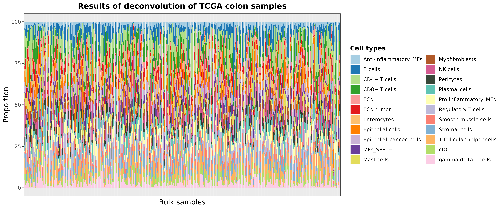
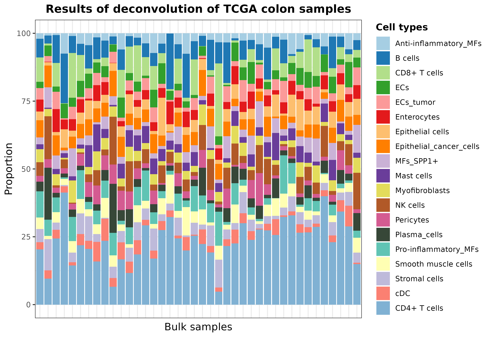

vignettes/pretrainedModels-hq.Rmd
pretrainedModels-hq.RmddigitalDLSorteR offers the possibility to use
pre-trained context-specific deconvolution models included in the
digitalDLSorteRmodels R package (https://github.com/diegommcc/digitalDLSorteRmodels) to
deconvolute new bulk RNA-seq samples from the same biological
environment. This is the simplest way to use
digitalDLSorteR and only requires loading into R a raw
bulk RNA-seq matrix with genes as rows (annotated as SYMBOL)
and samples as columns, and selecting the desired model. This is done by
the deconvDDLSPretrained function, which normalizes the new
samples to counts per million (CPMs) by default, so this matrix must be
provided as raw counts. Afterwards, estimated cell composition of each
sample can be explored as a bar chart using the
barPlotCellTypes function.
So far, available models only cover two possible biological environments: breast cancer and colorectal cancer. These models are able to accurately deconvolute new samples from the same environment as they have been trained on.
There are two deconvolution models for breast cancer samples that differ in the level of specificity. Both have been trained using data from Chung et al. (2017) (GSE75688).
breast.chung.generic: it considers 13 cell types, four
of them being the intrinsic molecular subtypes of breast cancer
(ER+, HER2+, ER+/HER2+ and
TNBC) and the rest immune and stromal cells
(Stromal, Monocyte, TCD4mem
(memory CD4+ T cells), BGC (germinal center B cells),
Bmem (memory B cells), DC (dendritic cells),
Macrophage, TCD8 (CD8+ T cells) and
TCD4reg (regulatory CD4+ T cells)).breast.chung.generic: this model considers 7 cell types
that are generic groups of the cell types considered by the specific
version: B cells (Bcell), T CD4+ cells
(TcellCD4), T CD8+ cells (TcellCD8), monocytes
(Monocyte), dendritic cells (DCs), stromal
cells (Stromal) and tumor cells (Tumor).DDLS.colon.lee considers the following 22 cell types:
Anti-inflammatory_MFs (macrophages), B cells, CD4+ T cells, CD8+ T
cells, ECs (endothelial cells), ECs_tumor, Enterocytes, Epithelial
cells, Epithelial_cancer_cells, MFs_SPP1+, Mast cells, Myofibroblasts,
NK cells, Pericytes, Plasma_cells, Pro-inflammatory_MFs, Regulatory T
cells, Smooth muscle cells, Stromal cells, T follicular helper cells,
cDC (conventional dendritic cells), gamma delta T cells.
It has been generated using data from Lee et al. (2020) (GSE132465, GSE132257 and GSE144735). The genes selected to train the model were defined by obtaining the intersection between the scRNA-seq dataset and bulk RNA-seq data from the The Cancer Genome Atlas (TCGA) project (Koboldt et al. 2012; Ciriello et al. 2015) and using the digitalDLSorteR’s default parameters.
The following code chunk shows an example using the
DDLS.colon.lee model and data from TCGA loaded from
digitalDLSorteRdata:
suppressMessages(library("digitalDLSorteR"))
# to load pre-trained models
if (!requireNamespace("digitalDLSorteRmodels", quietly = TRUE)) {
remotes::install_github("diegommcc/digitalDLSorteRmodels")
}
suppressMessages(library(digitalDLSorteRmodels))
# data for examples
if (!requireNamespace("digitalDLSorteRdata", quietly = TRUE)) {
remotes::install_github("diegommcc/digitalDLSorteRdata")
}
suppressMessages(library("digitalDLSorteRdata"))
suppressMessages(library("dplyr"))
suppressMessages(library("ggplot2"))
# loading model from digitalDLSorteRmodel and example data from digitalDLSorteRdata
data("DDLS.colon.lee")
data("TCGA.colon.se")DDLS.colon.lee is a DigitalDLSorterDNN
object containing the trained model as well as specific information
about it, such as cell types considered, number of epochs used during
training, etc.
DDLS.colon.lee## Trained model: 60 epochs
## Training metrics (last epoch):
## loss: 0.113
## accuracy: 0.6851
## mean_absolute_error: 0.0131
## categorical_accuracy: 0.6851
## Evaluation metrics on test data:
## loss: 0.0979
## accuracy: 0.7353
## mean_absolute_error: 0.0117
## categorical_accuracy: 0.7353
## Performance evaluation over each sample: MAE MSEHere you can check the cell types considered by the model:
cell.types(DDLS.colon.lee) %>% paste0(collapse = " / ")## [1] "Anti-inflammatory_MFs / B cells / CD4+ T cells / CD8+ T cells / ECs / ECs_tumor / Enterocytes / Epithelial cells / Epithelial_cancer_cells / MFs_SPP1+ / Mast cells / Myofibroblasts / NK cells / Pericytes / Plasma_cells / Pro-inflammatory_MFs / Regulatory T cells / Smooth muscle cells / Stromal cells / T follicular helper cells / cDC / gamma delta T cells"Now, we can use it to deconvolute TCGA.colon.se samples
as follows:
# deconvolution
deconvResults <- deconvDDLSPretrained(
data = TCGA.colon.se,
model = DDLS.colon.lee,
normalize = TRUE
)## === Filtering 57085 features in data that are not present in trained model## === Setting 0 features that are not present in trained model to zero## === Normalizing and scaling data## === Predicting cell types present in the provided samples## 1/17 [>.............................] - ETA: 1s17/17 [==============================] - 0s 795us/step## DONE## Anti-inflammatory_MFs B cells CD4+ T cells CD8+ T cells
## Sample_1 0.03555673 0.012629799 0.2033741921 0.009651527
## Sample_2 0.04712304 0.066985354 0.0743350685 0.037740961
## Sample_3 0.04327272 0.040529903 0.0704342425 0.065242790
## Sample_4 0.06370532 0.087266177 0.0009350283 0.025520576
## Sample_5 0.02191242 0.074413359 0.2854490578 0.011043761
## Sample_6 0.05057831 0.009333177 0.0532203466 0.045282334
## ECs ECs_tumor Enterocytes Epithelial cells
## Sample_1 0.005541964 0.01741249 0.00930732 0.07155290
## Sample_2 0.034868974 0.04209921 0.04230683 0.03910230
## Sample_3 0.005649934 0.05630094 0.04989067 0.05444700
## Sample_4 0.063553527 0.06356231 0.04261205 0.01939960
## Sample_5 0.006262527 0.06074687 0.04846477 0.01496454
## Sample_6 0.007942557 0.05870197 0.01205215 0.15696421
## Epithelial_cancer_cells MFs_SPP1+ Mast cells Myofibroblasts
## Sample_1 0.059090309 0.005882894 0.037573170 0.01825435
## Sample_2 0.027248615 0.064652205 0.043691449 0.06812528
## Sample_3 0.044213723 0.028884979 0.046738215 0.05523874
## Sample_4 0.062976733 0.021837069 0.006687692 0.02784960
## Sample_5 0.030808710 0.039284099 0.021862393 0.02031602
## Sample_6 0.005358715 0.020576829 0.106369697 0.02457042
## NK cells Pericytes Plasma_cells Pro-inflammatory_MFs
## Sample_1 0.20807564 0.04628118 0.03875882 0.004553901
## Sample_2 0.07469995 0.02922468 0.01664688 0.024583302
## Sample_3 0.05755382 0.02136339 0.04671244 0.007121266
## Sample_4 0.06164910 0.04961385 0.03491507 0.019962544
## Sample_5 0.04073286 0.02935413 0.02051810 0.061510801
## Sample_6 0.03025281 0.01038809 0.04958449 0.001022621
## Regulatory T cells Smooth muscle cells Stromal cells
## Sample_1 0.0008091909 0.00492954 0.02901827
## Sample_2 0.0906273350 0.03798828 0.03085841
## Sample_3 0.0678701103 0.03658660 0.08270273
## Sample_4 0.0492653213 0.02225602 0.09293171
## Sample_5 0.1044049561 0.02452374 0.04414547
## Sample_6 0.1324384958 0.07235327 0.02527887
## T follicular helper cells cDC gamma delta T cells
## Sample_1 0.100938708 0.034195002 0.04661205
## Sample_2 0.059172746 0.030084064 0.01783505
## Sample_3 0.036124315 0.065181993 0.01793949
## Sample_4 0.059893299 0.057660528 0.06594691
## Sample_5 0.004997781 0.006953675 0.02732999
## Sample_6 0.017107351 0.067269459 0.04335385deconvDDLSPretrained returns a data frame with samples
as rows (\(k\)) and cell types
considered by the model as columns (\(j\)). Each entry corresponds to the
proportion of cell type \(k\) in sample
\(i\). To visually evaluate these
results using a bar chart, you can use the barplotCellTypes
function as follows:
barPlotCellTypes(
deconvResults,
title = "Results of deconvolution of TCGA colon samples", rm.x.text = T
)
Let’s take 40 random samples just to improve the visualization:
set.seed(123)
barPlotCellTypes(
deconvResults[sample(1:nrow(deconvResults), size = 40), ],
title = "Results of deconvolution of TCGA colon samples", rm.x.text = T
)Finally, deconvDDLSPretrained also offers two parameters
in case you want to simplify the results by aggregating cell proportions
of similar cell types: simplify.set and
simplify.majority. For instance, we can summarize different
CD4+ T cell subtypes into a unique label by using the
simplify.set parameter as follows:
# deconvolution
deconvResultsSum <- deconvDDLSPretrained(
data = TCGA.colon.se,
model = DDLS.colon.lee,
normalize = TRUE,
simplify.set = list(
`CD4+ T cells` = c(
"CD4+ T cells",
"T follicular helper cells",
"gamma delta T cells",
"Regulatory T cells"
)
)
)## === Filtering 57085 features in data that are not present in trained model## === Setting 0 features that are not present in trained model to zero## === Normalizing and scaling data## === Predicting cell types present in the provided samples## 1/17 [>.............................] - ETA: 0s17/17 [==============================] - 0s 844us/step## DONE
rownames(deconvResultsSum) <- paste("Sample", seq(nrow(deconvResults)), sep = "_")
set.seed(123)
barPlotCellTypes(
deconvResultsSum[sample(1:nrow(deconvResultsSum), size = 40), ],
title = "Results of deconvolution of TCGA colon samples", rm.x.text = T
)
On the other hand, simplify.majority does not create new
classes but sums the proportions to the most abundant cell type from
those provided in each sample. See the documentation for more
details.
You can make available our own models to other users. Just drop an email and we will make them available at the digitalDLSorteRmodels R package!